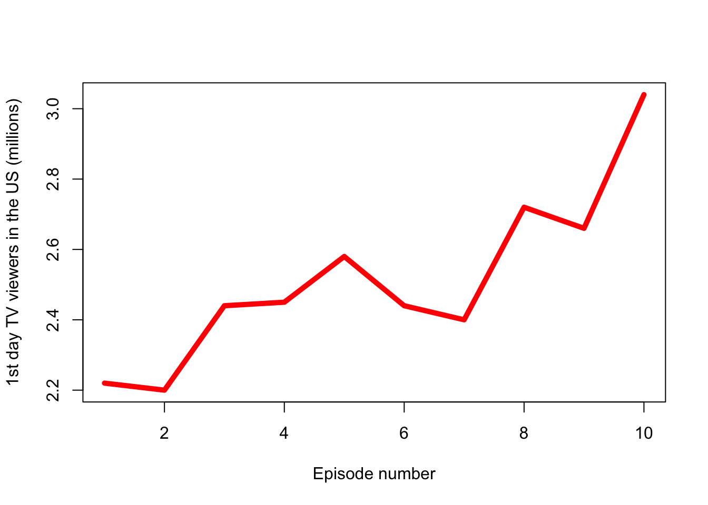

Exercise
Game of Thrones - Season 1 summary in numbers
(Warning: spoilers ahead)
Overview
(From the Wikipedia) Game of Thrones is an American fantasy drama television series created by David Benioff and D. B. Weiss for HBO. It is an adaptation of A Song of Ice and Fire, a series of fantasy novels by George R. R. Martin, the first of which is A Game of Thrones.
Set on the fictional continents of Westeros and Essos, Game of Thrones has a large ensemble cast and follows several story arcs throughout the course of the show. A major arc concerns the Iron Throne of the Seven Kingdoms of Westeros through a web of political conflicts among the noble families either vying to claim the throne or fighting for independence from it. Another focuses on the last descendant of the realm’s deposed ruling dynasty, who has been exiled to Essos and is plotting a return to the throne. A third story arc follows the Night’s Watch, a military order defending the realm against threats from the North.
Season 1 summary
Season 1 of Game of Thrones consisted of 10 episodes that aired between April 17 and June 19, 2011 on HBO. The show gathered an average of 2.515 first-day TV viewers in the US, with the number growing from 2.22 to 3.04 million by the end of the season.
The most popular episode of the season was “Fire and Blood”, in which:
“The North secedes from the Seven Kingdoms and proclaims Robb as king. With Jaime as the Starks’ prisoner and Robert’s two brothers, Stannis and Renly, each challenging Joffrey’s claim to the throne, Tywin appoints Tyrion as acting King’s Hand, while Tywin fights to defend Joffrey’s reign. Jon attempts to desert the Night’s Watch to avenge Ned and join Robb, but his Night’s Watch brothers convince him to honor his oath. Jon joins an expedition to search for Benjen Stark beyond the Wall. Yoren, a Night’s Watch recruiter, smuggles Arya out of King’s Landing disguised as a boy, while Joffrey intends to crown Sansa his queen, despite executing her father. Daenerys’s baby is born deformed and dead, and Drogo is left in a vegetative state by the witch’s treacherous magic. Daenerys compassionately ends Drogo’s life. She places the three dragon eggs on Drogo’s funeral pyre and sets it afire, also burning the witch alive. Ignoring Jorah’s pleas, she walks into the flames. When the embers die the following morning, Daenerys is found in the ashes, unharmed, flanked by three newly-hatched baby dragons. Jorah and other witnesses kneel before her.”
You can see how the viewership of the episodes changed in Figure 1.
Finally, the episodes with the above-average viewership were:
| No. in season | Title | Directed by |
|---|---|---|
| 5 | “The Wolf and the Lion” | Brian Kirk |
| 8 | “The Pointy End” | Daniel Minahan |
| 9 | “Baelor” | Alan Taylor |
| 10 | “Fire and Blood” | Alan Taylor |
Including ordered tabs
1. Please watch
2. Please analyze
3. Please forget
Including unordered tabs
* Please forget
* Please watch
* Please analyze